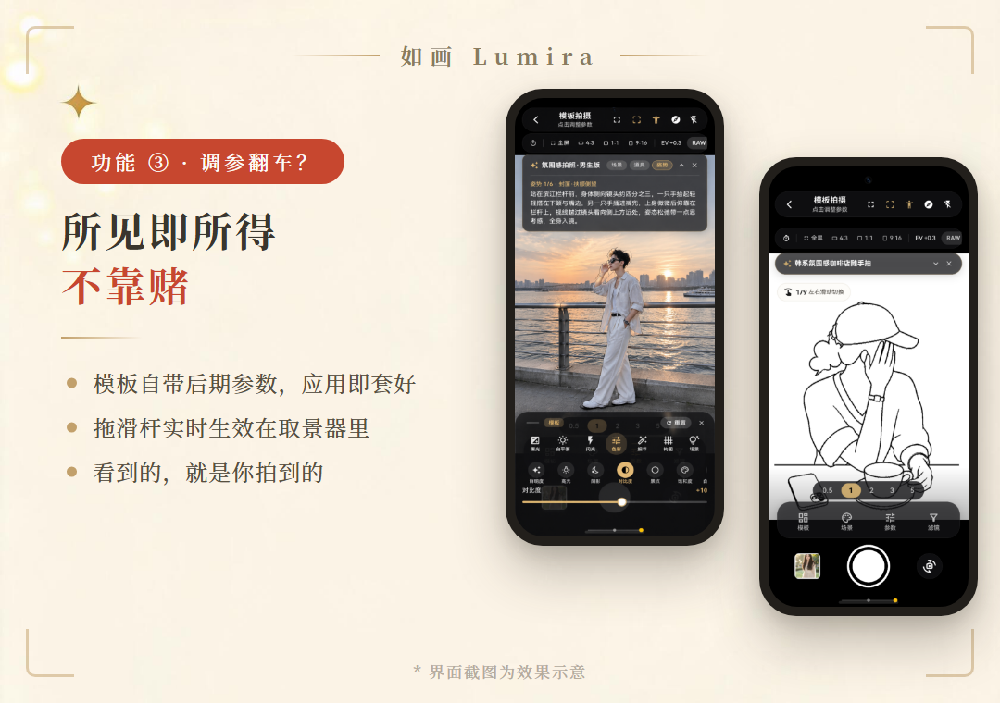
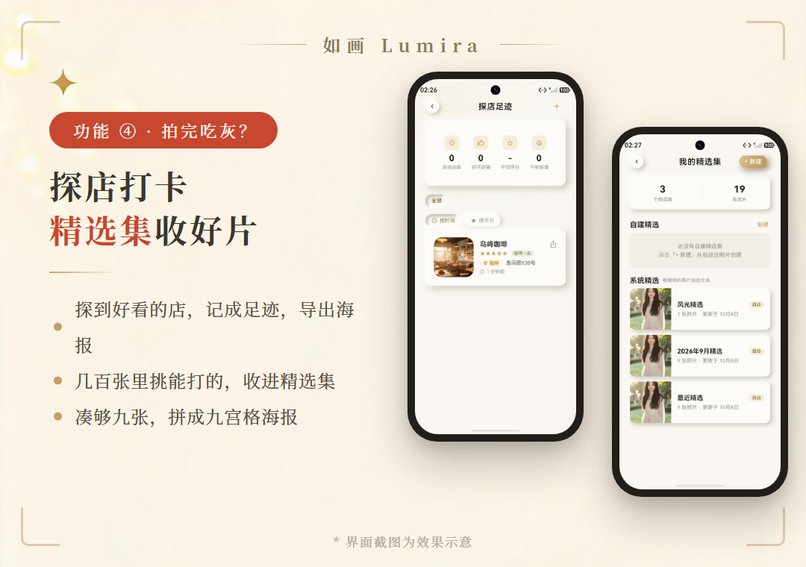
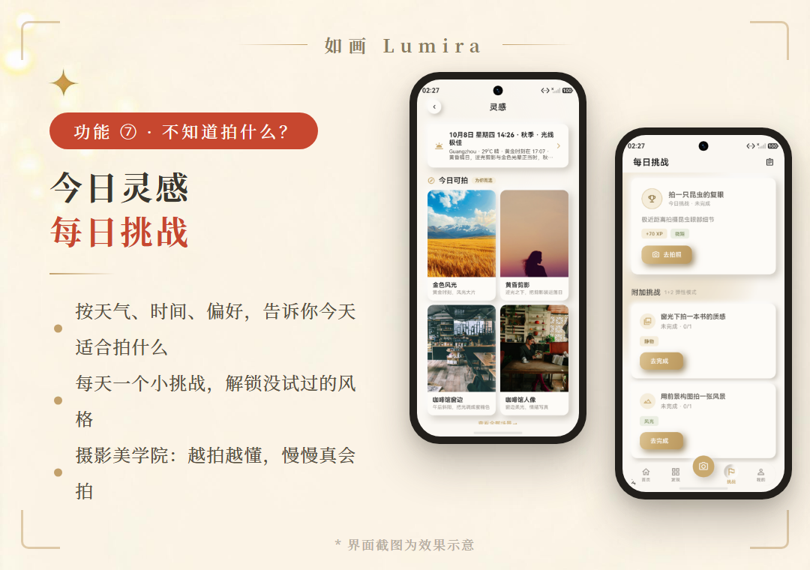

上一篇讲到，我受够了「拍了等于白拍」，于是花三个月写了个拍照 App「如画 Lumira」——套个模板，照着取景框里的剪影摆，就能出片。（错过的朋友点主页就能看到）
评论区有几个问题问得很集中：模板怎么找？后期怎么不翻车？拍完的照片有没有下文？今天这篇就把 7 个功能一口气讲清，全部对着界面截图讲。
— 01 —
不会摆姿势？套个模板，照着剪影站
每个模板是一套「构图辅助 + pose 引导 + 后期调参」三件套。一键套用，取景框里出现半透明剪影——人站哪儿、手怎么放、腿怎么搭、相机举多高，全都画给你看。一套模板还有多个姿势，滑动切换不重样。

▲ 取景框里的半透明剪影 · 效果示意
— 02 —
模板太多？关键词一搜，直接抄作业
站在好看的风景前，或者刷到好看的模板，直接输关键词——「公园」「日落」「咖啡店」——匹配的模板立刻出来，每套都标注了季节、场景和拍法。再也不用一个分类一个分类地翻，输入框一敲，心里就有底了。
▲ 搜索页 · 效果示意
— 03 —
后期翻车？调参所见即所得
很多 App 都是拍完再进编辑页调，一保存才发现过曝了、变丑了——晚了。如画反过来：在取景器里直接拖亮度、对比度、色调，参数实时生效，眼前所见就是成片。
你看到的，就是你拍到的。

▲ 实时调参面板 · 效果示意
— 04 —
拍完没下文？探店打卡 + 精选集
遇到好看的店、好看的景，随手记成一条探店足迹，配上刚拍的照片，一键导出海报分享；从几百张里挑出真正能打的收进精选集，凑够了拼成一张九宫格海报。别人发朋友圈是「随手发」，你是「精选发」。

▲ 探店足迹 · 我的精选集 · 效果示意
— 05 —
一起出门拍？把模板甩给他
看到好看的模板，一键生成分享卡片发给对象、闺蜜，对方轻轻一点，同一套直接用。「帮我拍张照」从此不再是大型尴尬现场——把模板甩给他，让他照着框里的剪影拍就行。
▲ 模板分享卡片 · 效果示意
— 06 —
嫌平台模板不够对味？自己做一个
场景、封面、剪影、参数，全按你的喜好新建一个模板。你的审美、你常拍的场景、你最上镜的角度，都会沉淀成一张专属于你的「拍摄速通卡」——用得顺手，还能分享给别人。
▲ 新建模板 · 效果示意
— 07 —
不知道今天拍什么？让它帮你定
今日灵感结合天气、时间、你的偏好，告诉你今天适合拍什么；每日挑战会推一些你平时没尝试过的类型；摄影美学院用轻松的方式补构图、光线、角度的知识——慢慢从「会套模板」走向「真会拍照」。

▲ 今日灵感 · 每日挑战 · 效果示意
— 写在最后 —
7 个功能讲完了。你会发现它们其实是同一条逻辑：把"怎么拍"从一门理论，变成一件看得见、照着做的小事。
下一篇是这个系列的最后一篇「情感篇」——聊聊天相册里那 3000 张"拍了但没看过"的照片，值得一个什么样的出口。
App 目前已上架 iOS App Store 与 OHOS 华为应用市场，搜索「如画 Lumira」即可下载。模板不定期实时更新，持续跟随网络热门拍照风格与姿势上新。
愿你把它带在身边，把平凡的日子，拍出如画的模样。
拍照前，先打开如画 ✨